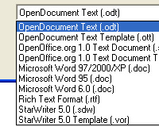
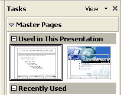
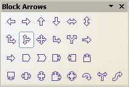
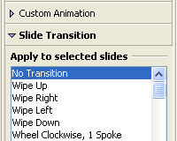
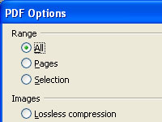
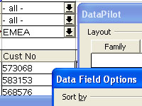

| Introduction |
| OpenOffice.org 2.0 - word
processor, spreadsheet application, presentation tool and more |
OpenOffice.org 2.0 is an
open, feature-rich multi-platform office productivity suite. The user interface
and the functionality is very similar to other products in the market like
Microsoft Office or Lotus SmartSuite, but in contrast to these commercial
products OpenOffice.org is absolutely free.
A full description of the
application can be found on the product pages at:
A list of the features introduced in past versions of
OpenOffice.org can be found at:
|
| Highlights (Click on thumbnail images to see a larger
picture!) |
| Open Standards XML File Format
(OASIS OpenDocument) |
|  |
Beginning with version 2.0
OpenOffice.org uses the open standard
OASIS
OpenDocument XML format as the default file format. The OASIS OpenDocument
format is a vendor and implementation independent file format, and thus
guarantees freedom and independence.
In addition to OpenOffice.org itself,
the open source office suite KOffice as
well as OpenOffice.org derivatives like the
StarOffice software support the
OASIS OpenDocument file format. The OASIS OpenDocument file format is also one
of the file formats recommended by the
European
Commission. |
|
| New Multi-pane View |
|  |
The new Multi-pane view
increases the productivity and usability of OpenOffice.org. The Multi-pane view
provides all important tools and windows through one coherent, integrated, and
simple user interface. Former Microsoft PowerPoint users should find
OpenOffice.org 2.0 easy to use. |
|
| New CustomShapes (compatible
with Microsoft AutoShapes) |
|  |
OpenOffice.org now
supports CustomShapes, which are very similar to Microsoft's AutoShapes. As a
consequence, AutoShapes are imported and displayed correctly. CustomShapes are
shapes that can change not only their size but also their appearance. |
|
| More Slide Transitions and
Animation Effects |
|  |
OpenOffice.org now
supports many more animation effects and slide transitions. Now users have more
options to give their presentations a professional appearance. In addition, the
extended support for effects improves compatibility with Microsoft
PowerPoint. |
|
| Enhanced PDF Export |
|  |
OpenOffice.org 1.1
introduced the PDF export feature. Version 2.0 now extends the basic export
feature. With the new version it is possible to define the compression levels
of embedded images. In addition, the PDF support now correctly handles
thumbnail images and hyperlinks. |
|
| New enhanced Database
Frontend |
|
OpenOffice.org always had
database front end tools, but in past versions they were very hidden.
OpenOffice.org 2.0 starts to handle databases like any other application, i.e.
a new database can be created via the "File - New" menu. For novice users
OpenOffice.org provides a new Table Wizard that allows creating database tables
without any knowledge of databases or SQL. The new embedded
HSQLDB database engine, based on
Java technology, allows creating "database documents". These simple database
files don't require a back end database server like MySQL or Adabas D. All
information (table definitions, data, queries, forms, reports) is stored in one
XML file. |
|
| Mail Merge Wizard |
|
The new Mail Merge Wizard
makes it very easy to do mailings to hundreds of recipients. The wizard guides
users step by step through the process. Various data sources can be used for
the address information. |
|
| Enhanced Word Count Feature |
|
In the past it was only
possible to find document statistics under "File - Properties ...". It also was
impossible to count the number of words in a selection. OpenOffice.org 2.0
eliminates this restriction. Now a new word count dialog can be found in the
"Tools" menu. |
|
| Support for Nested Tables |
|
With OpenOffice.org 2.0 it
is now possible to create tables within tables (nested tables). This increases
overall usability, and also improves compatibility with Microsoft Word. |
|
| Digital Signatures Support |
|
Another new feature is the
support of digital signatures. OpenOffice.org uses certificates stored in the
regular repositories. |
|
| XForms Support |
 |
OpenOffice.org 2.0 now
allows creating forms based on the open
W3C XForms standard. With XForms
it is very easy to implement simple logic without any programming. |
|
| WordPerfect Filters |
|
OpenOffice.org 2.0
includes a WordPerfect
filter developed by the open source community. Developers are invited to
contribute to this
project. |
|
| 65,536 Rows in Calc |
|
OpenOffice.org 1.1
supported only 32,768 rows in spreadsheet documents, which caused Microsoft
Excel interoperability issues. The new version now takes OpenOffice.org to the
same level as Microsoft Excel. |
|
| Enhanced PivotTable Support |
|  |
With the DataPilot in
OpenOffice.org 2.0 (similar to Microsoft Excel's PivotTable feature) it is now
possible to create new groups, filter data based on values, show differences
and percentages instead of absolute values, etc.
The new DataPilot features
turn OpenOffice.org Calc into a very powerful tool for data analysis. |
|
| Native Installers |
|
OpenOffice.org 2.0
supports native installation mechanisms. For example, .MSI and .CAB files are
provided on Microsoft Windows; RPM files are available for Linux.
For users
with more sophisticated management requirements, Sun provides configuration
management tools as part of the StarOffice software. StarOffice 8 will
also introduce Macro migration tools. |
|
| Native Desktop Integration |
|
The OpenOffice.org 2.0
applications integrate nicely into the desktop environment. Thus,
OpenOffice.org looks and behaves like any other application on a given
platform. On Windows XP it looks like a Windows application, and on Linux it
uses the same UI widgets as GIMP or Evolution. |
|
| Floating Toolbars |
|
Toolbars are much more
flexible in OpenOffice.org 2.0. It is now very easy to move, attach, and detach
toolbars, and to move them around and customize them. |
|
| Support, Services and
Solutions |
|
An increasing number of
companies provide support,
services and solutions for
OpenOffice.org.
More and more companies also offer derived versions of
OpenOffice.org that include additional components like management tools (e.g.
StarOffice from Sun
Microsystems). |
|
| More
Information |
| Additional Screenshots |
|
|
| Complete OpenOffice.org 2.0
Feature List |
|
|
| OpenOffice.org Product Page |
|
|
| Erwin Tenhumberg's Blog
explaining new Features in StarOffice 8 |
|
|
| OpenOffice.org Download
Central |
|
|
|

{kind=link}
{kind=link}
{kind=link}
{kind=link}
{kind=link}
{kind=link}
{kind=link}
{kind=link}
{kind=link}
{kind=link}
{kind=link}
{kind=link}
{kind=link}
{kind=link}